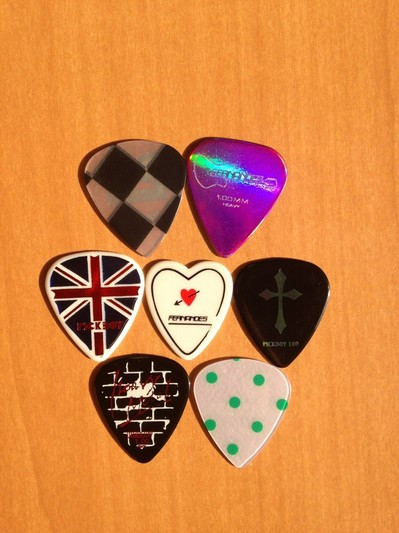

【押忍！シャイ番長友情の旅】 第９回 金子の日記
「押忍！シャイ番長友情の旅」９回目の放送、ご覧いただけましたか？
火がおきるまでに2時間かかって、日帰りキャンプ、
どうなることかと思われましたが…
シャイ番長、頑張りました！
屋外でつくるバウムクーヘンのレシピは、いろいろなサイトで紹介されています。
竹を芯にしてつくる場合は、竹が破裂しないように、きり・のこぎりなどで竹の節に穴をあけてくださいね。
山あり谷ありの展開を、シャイ番長の日記でもお楽しみください。
左クリックをすると、原寸大になります。
投稿者:大天才テレビジョン社員２号 | 投稿時間:18時54分 | カテゴリ：お知らせ！ | 固定リンク


 " title="ソーシャルブックマークについて">
" title="ソーシャルブックマークについて">
※NHKサイトを離れます。
【私のアイドル】岡田結実
★私のアイドル★
SEKAI NO OWARI さんが大好きです
好きになったのは2012年くらいからで、すず（鎮西寿々歌）などなど
みんなの影響で好きになりました☆
なぜ好きなのか？
それはSEKAOWAの歌の雰囲気が大好きで
明るい歌や暗い感じのクールな歌、
元気のもらえる歌など色々あって大好きです！
そしてふかせさん（ボーカル）。
ふかせさんの声が大好きです。
聞いてるだけで幸せになったりします☆
いつかは会ってみたいですし、一緒に共演もしてみたいです(*^^*)
そのためには、今もこれからもがんばりますっ！！
大好きなSEKAOWAさんにいつかきっと会いたいです☆///
★最近の身近なできごと★
今年中学校で軽音楽部に入ったので
写真をギターのピックにしました☆
このピック、友達のピック借りて写真撮ったんですけどね！
ちなみにゆいの担当の楽器はベースです♪♪
まだ買ってないのですが…
早く買って、文化祭に向けて本格的に頑張っていきます(*´∀｀*)

投稿者:岡田結実 | 投稿時間:18時00分 | カテゴリ：We are 大天才テレビジョン | 固定リンク
" title="ソーシャルブックマークについて">
※NHKサイトを離れます。